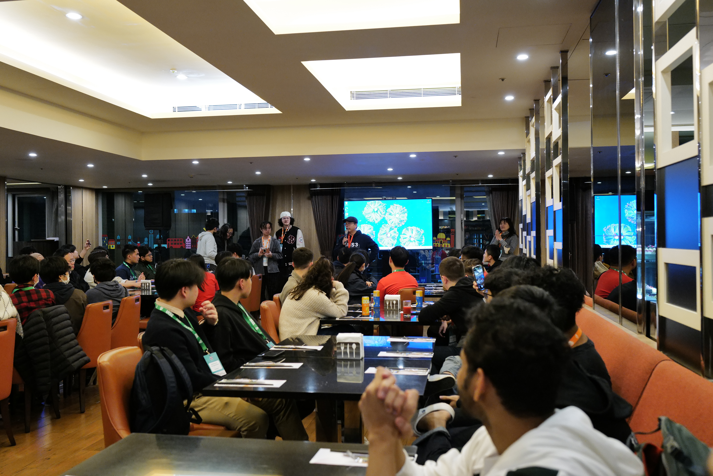
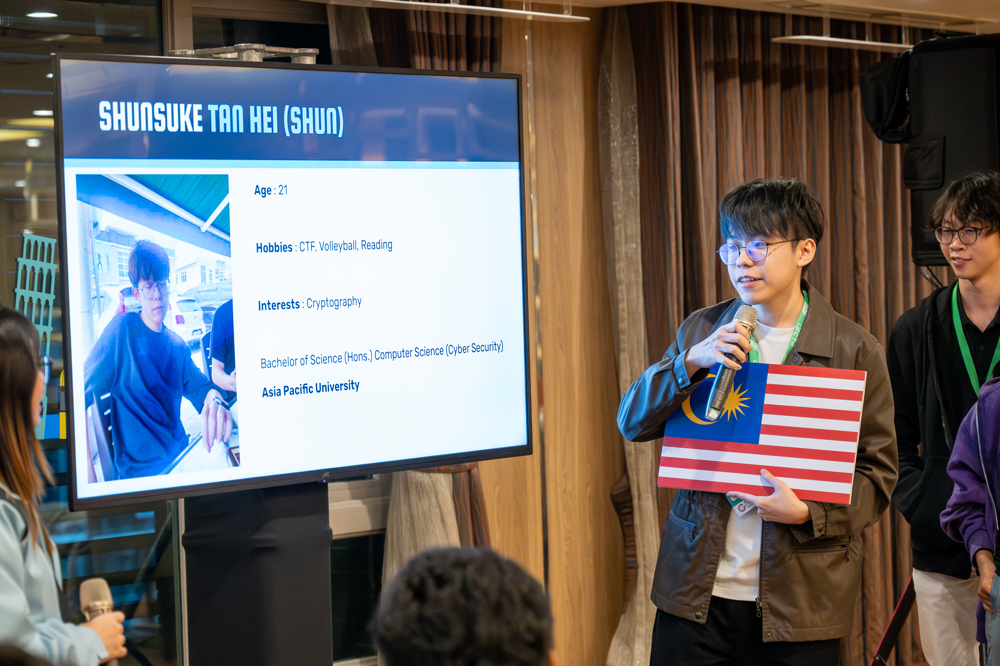
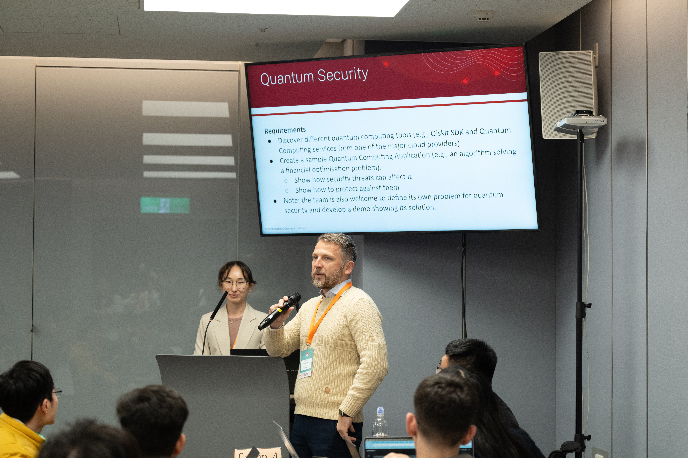
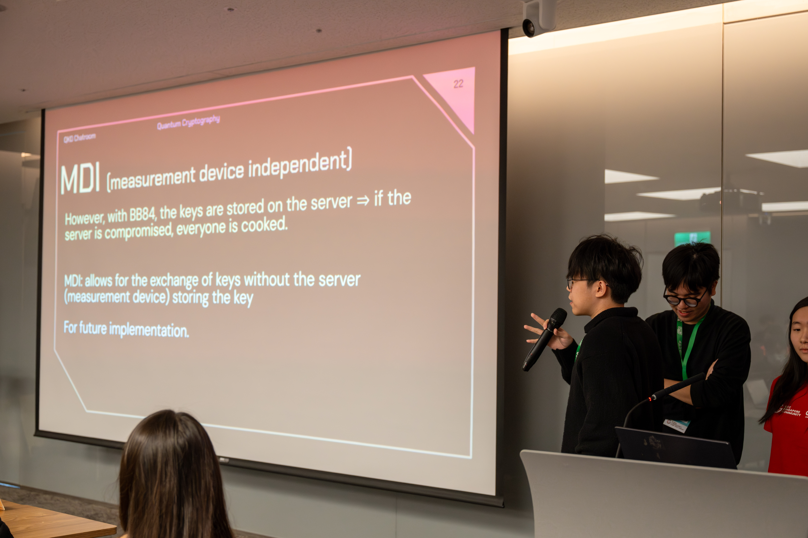
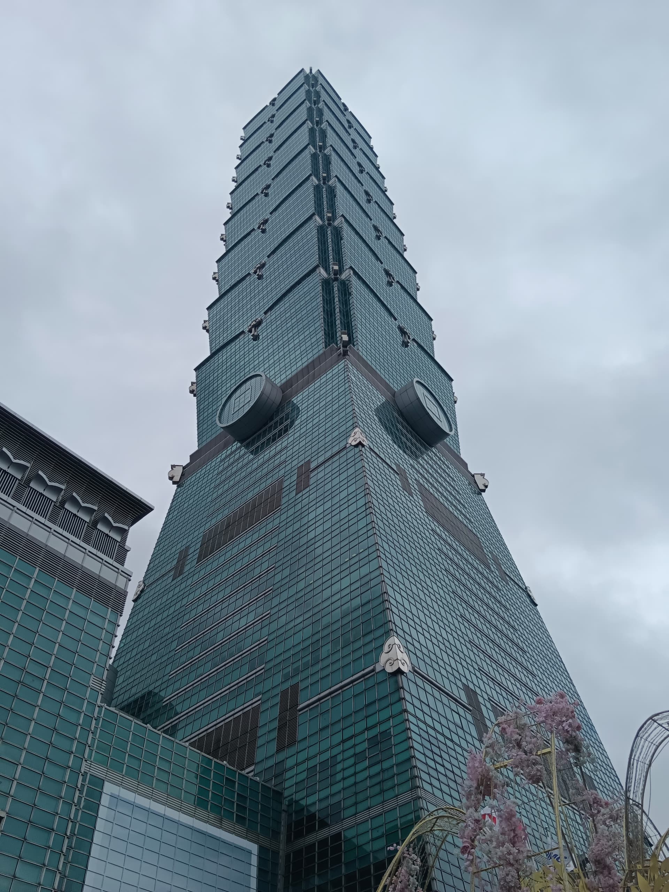
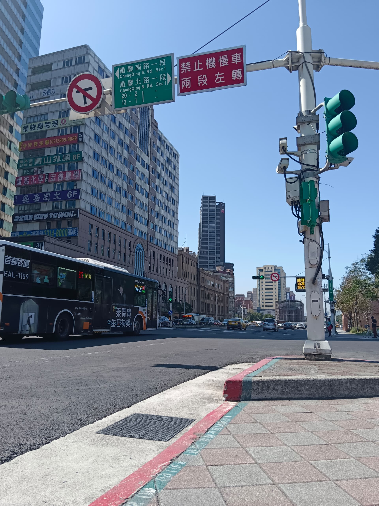
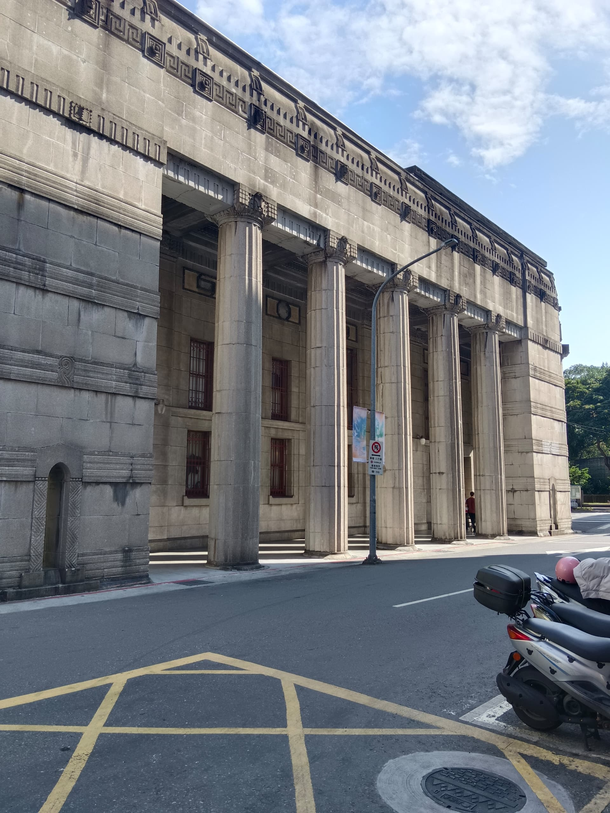

Earlier this year I had the privilege of attending the Global Cybersecurity Camp (GCC) 2025 in Taiwan—a week-long gathering of the top students from around the world, all passionate about building a safer digital future. Hosted in a different country each year, GCC brings together next-generation cybersecurity leaders to learn from industry experts, work on real-world problems, and forge lifelong connections.
Day 0 — Arrival & Ice-Breaking
After a quick check-in at the hotel, everyone gathered for an evening ice-breaking party in the hotel cafe. I was placed on a team with representatives from four other countries, and over games and snacks we swapped stories of local CTF scenes, our favorite tools, and expectations for the week ahead.


Day 1 — Opening Workshops & Group Assignment
We kicked off the morning with a welcome breakfast followed by opening remarks from the GCC organizers. The first technical session was an introduction to threat modelling, led by Donovan Cheah (SG), where we mapped out attack trees for common web app flaws using Threat Dragon.
In the afternoon we each drew a “group project” out of a hat—my team’s topic was Quantum Security. We spent the rest of the day planning our BB84 simulation and dividing up roles.

Day 2 — Reverse Engineering Malware
Hiroshi Suzuki & Naoki Takayama led an intensive lab on reversing C++ malware with IDA and semi-automated scripting. We got to learn to use a much unconventional way in reversing class objects and methods.
Day 3 — OT Security & Threat Intelligence
The morning session by Vic Huang & Sol Yang dove deep into operational technology (OT) attacks—think SCADA, industrial controllers, and the unique challenges of embedded firmware. After lunch, Tomohisa Ishikawa introduced a workflow for integrated threat intelligence: ingesting OSINT feeds, correlating IoCs, and feeding custom rules into a live SIEM.
Day 4 — Kernel Exploitation & Automotive Hacking
In the morning, Cherie-Anne Lee opened with a crash course on modern Linux kernel exploits such as dirty pipes by demonstrating the CTF challenges she has created in the past. Then Kamel Ghali showed us how to break into CAN-bus networks in cars and especially to understand which part of the CAN dump should we focus on for certain information about the car.
Day 5 — Groupwork Showcase & City Tour
Presentation day! My team demonstrated our BB84 quantum key distribution simulation made using WebSockets as our “quantum channel” and a manual man-in-the-middle script to show why any interception breaks the protocol. The judges loved the live demo. Afterwards, the camp took us on a group tour up Taipei 101 for the rest of the afternoon.


Day 6 — Farewell Day
With our flight booked for late evening, we wandered around Taipei’s cityscape and went to various museums and spots that were on our todo list. It was the perfect coda to a week of intense learning and incredible new friendships. Here are some really random photos I took of the cityscape.


Afterwords
GCC 2025 Taiwan was more than a conference, it was a place for curating ideas, a playground for curious minds, and a global community I’m proud to be part of. It built my confidence in topics that I would never have thought to break into it myself. Big thank you to SherpaSec and Cyberwise for their sponsor and support, especially putting the trust into us for representing Malaysia in such a grandiose event. Looking forward to seeing how Vietnam will host for GCC 2026!